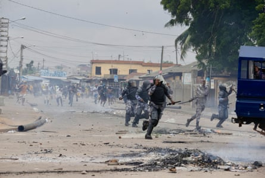
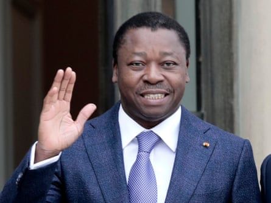

O n the night last month that he and 34 other young people were arrested in the Togolese capital, Lomé, for coordinating an anti-government demonstration, Bertin Bandiangou said gendarmes beat him with ropes and slapped him. The next morning he was tortured while a commanding officer filmed proceedings.
He was lucky to get out alive: at least 10 people have been killed by security officials since protests began in June calling for the resignation of the small west African country’s president, Faure Gnassingbé.
“From this bitter experience, it is clear that the Togolese regime is prepared to commit the worst atrocities to retain power,” said Bandiangou, a 24-year-old student union president at the University of Lomé.
With the exception of a three-month period in 2005, Togo has been ruled by the Gnassingbés since 1967, when Faure Gnassingbé’s father, Gnassingbé Eyadéma, took power in a bloodless coup.
In February, the government hosted a flamboyant $34m memorial service for Eyadéma, who died in 2005. Observers said the ceremony, attended by five former African presidents, served as a lavish statement of the dynasty’s enduring power.
Then in May, Gnassingbé’s power was further consolidated when he was sworn in as “president of the council of ministers”, a new post that is not subject to term limits. The swearing-in was the culmination of a process that began in March last year when parliament amended the constitution, without a referendum, to do away with presidential elections – a move described by the Touche Pas à Ma Constitution coalition as “a coup against the Togolese people”.
The price of dissent
Though the memorial service and constitutional changes struck a nerve with young people in Togo who want political change, the spark for the recent protests was the arrest of Tchala Essowè Narcisse, a popular rapper known as Aamron, on 26 May.
A still from Aamron’s video Nouveaux DossiersPhotograph: Aaamron/Youtube
Aamron has built a following on TikTok, and his songs denounce corruption, economic stagnation and state neglect. His arrest followed a satirical call for a mobilisation to mark Gnassingbé’s birthday.
According to Célestin Kokou Agbogan, his lawyer and the president of Togo’s Human Rights League, Aamron was arrested without a warrant and held incommunicado for 10 days. A video clip then surfaced in which, appearing disoriented, he claimed the state had labelled him mentally unstable and had detained him in a psychiatric facility in Zébé, just outside Lomé.
Agbogan said no official charges had been filed. The opposition alliance Dynamics for Majority of the People condemned the arrest as “unlawful, unjustified, and driven by political motives” and has called for Aamron’s immediate and unconditional release.
In the days after his disappearance, fans flooded social media with clips of his defiant lyrics. Then they took to the streets of Lomé, barricading roads, burning tyres and chanting “Libérez Aamron!” and “Togo Libre!”
Demonstrators in Lomé clash with police during a protest calling for the president’s resignation.Photograph: Erick Kaglan/AP
“Since Faure Gnassingbé became president, any opinion that does not praise him is seen as a crime,” Bandiangou said. “He systematically imprisons all dissenting voices. Aamron’s arrest was … one too many.”
Bandiangou said his aim was to mobilise people in an attempt to end the practice of arbitrary imprisonment and allow political prisoners to regain their freedom.
Protesters have paid a steep price for their dissent: more than 100 have been arrested since June, and some are still missing. Amnesty International said last week it had interviewed victims and witnesses who described a series of abuses by security forces against demonstrators, including acts of torture.
On 1 July, the Economic Community of West African States urged restraint and called for dialogue. Otherwise, international reaction has been muted, drowned out by geopolitical crises elsewhere.
Nevertheless, diaspora communities and human rights groups are attempting to ramp up pressure on the regime, demanding sanctions and diplomatic scrutiny.
‘Our message was clear’
Experts say beneath the anger at the constitutional changes lies a deeper well of frustration over corruption and nepotism that has been exacerbated by a scarce jobs market and a rise in the cost of living.
Togo’s president, Faure Gnassingbé. His family has ruled Togo almost exclusively since 1967.Photograph: Lewis Joly/AP
Protests have erupted periodically for decades – usually over delayed elections, term extensions and heavy-handed crackdowns – but there are signs that discontent is widening.
Civil society groups and opposition parties held demonstrations on three consecutive days in late June over a planned pan-Africanist conference – later cancelled – that they claimed would whitewash the latest power grab, while protests have also broken out in recent weeks over electricity price rises.
“Young people are exasperated by shortsighted and aimless governance, and by being held hostage by a regime incapable of providing the population with the basic necessities of life,” said Bandiangou. “Our message is clear: we no longer want a regime that imprisons our dreams and has terrorised an entire people for nearly six decades.”